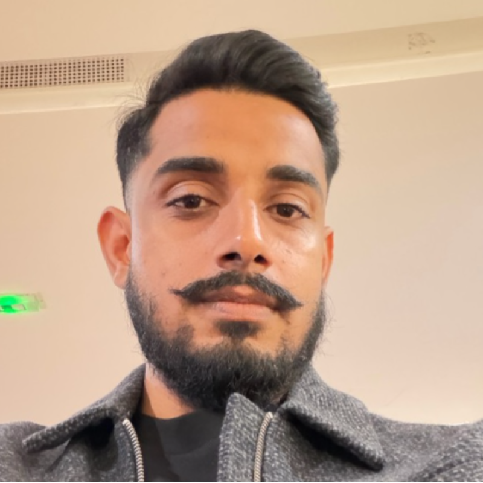

Hi! I am a doctoral researcher in Digital Image Forensics and Computer Vision. My research focuses on Vision-Language Models (VLMs), deepfake forensics, and developing robust multi-scale architectures to expose, localize, and explain subtle image manipulations.
Currently, I am pursuing my PhD in the Department of Electrical Engineering (ISY), Information Coding Division at Linköping University in Sweden, funded by the Wallenberg AI, Autonomous Systems and Software Program (WASP), and working as a Teaching Assistant alongside my research.
Prior to this, I spent 2021–2025 as a Research Assistant in the Computer Engineering Department at King Fahd University of Petroleum and Minerals (KFUPM) where I earned my M.S. in Computer Engineering, and 2019–2021 as a Vision Research & Development Engineer at E-Wall in Peshawar, Pakistan.
Adnan Munir
Department of Electrical Engineering (ISY)
Linköping University
Linköping, Sweden
Visit the interactive project showcase covering ongoing research implementations, system prototypes, and software releases.
Access recorded lecture series, computer architecture tutorials, and real-time computer vision video demonstrations.
PhD Student, Digital Image Forensics
Linköping University (ISY) · WASP-funded · Teaching Assistant
Conducting research in VLM-powered digital image forensics, detecting and localizing subtle synthetic manipulations in visual media.
Research / Teaching Assistant
King Fahd University of Petroleum and Minerals (KFUPM)
Provided expertise in Artificial Intelligence, Machine Learning, and Computer Vision, focusing on advanced algorithm development, real-time model deployment, and innovative solutions for complex problems. Work included designing custom models, integrating AI with embedded systems, and driving research to advance technology.
Embedded System Engineer
Jolta Electric
Responsible for designing, developing, and optimizing embedded systems that drive innovative solutions in the electric vehicle industry. Role involved working on hardware-software integration, developing firmware for various sensors and controllers, and ensuring robust performance and reliability.
Computer Vision Research Engineer
E-Wall, Peshawar, Pakistan
Designed and developed software and hardware systems to process, analyze, and interpret visual data from cameras and sensors. Utilized C++, Python, and machine learning algorithms to develop computer vision systems that detect objects, track movements, and recognize patterns in visual data.
M.S., Computer Engineering
King Fahd University of Petroleum and Minerals (KFUPM)
B.S., Computer Engineering
COMSATS University Islamabad, Attock Campus
View detailed graduate coursework, PhD specialization subjects, and academic transcripts on the Courses Page ↗.
Explore leadership and volunteer community engagements on the Extra-Curricular Activities page ↗ .